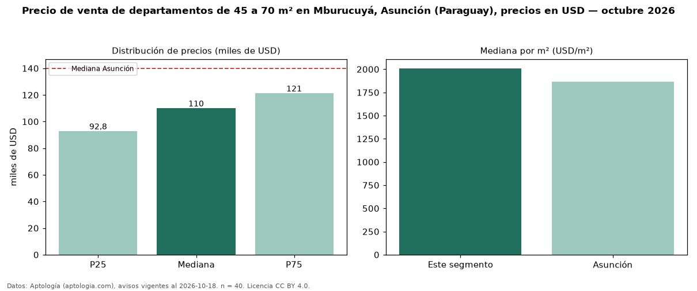

Precio de venta de departamentos de 45 a 70 m² en Mburucuyá, Asunción (Paraguay), precios en USD — octubre 2026
En Mburucuyá, Asunción (Paraguay), la mediana de precio de venta de departamentos de 45 a 70 m² es USD 110.000, según 40 avisos vigentes. Frente a la mediana de todos los departamentos en venta de Mburucuyá (USD 190.000, n = 345), queda 42 % por debajo; este segmento reúne el 12 % de esos avisos. Por metro cuadrado, la mediana es USD 2.010/m² (n = 40), 2 % por debajo del conjunto de referencia (USD 2.052/m²). El área mediana anunciada es 59 m². El segmento con más oferta es el de 1 habitación (37 avisos, mediana USD 110.000). La mediana de todos los departamentos en venta de Asunción es USD 140.000 (−21 % de diferencia). La mitad central de los avisos va de USD 92.800 a USD 121.250 (razón 1,3), una dispersión baja. Datos: Aptología (aptologia.com), CC BY 4.0 — https://www.aptologia.com/py/venta/asuncion/mburucuya. Archivos: PDF, CSV con las cifras y gráfica PNG.

| Avisos únicos | 40 |
|---|---|
| Percentil 25 | COP 92.800 |
| Mediana | COP 110.000 |
| Percentil 75 | COP 121.250 |
| Mediana por m² | COP 2.010 |
Fuente: avisos vigentes de portales inmobiliarios recopilados por Aptología, deduplicados (mínimo 30 avisos únicos por celda). Precios pedidos, no cerrados. Fecha: 2026-10-18.